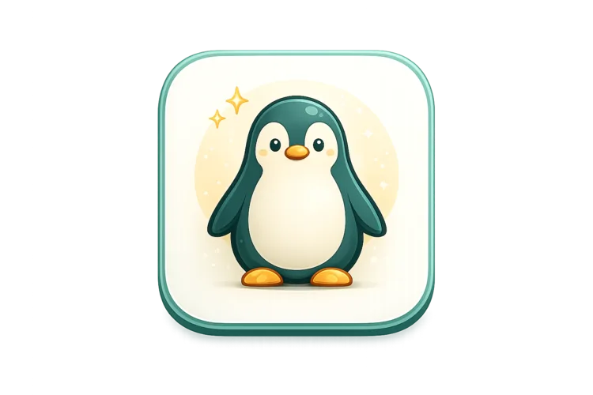

0Mascotas registradas
+8 este mes
Software local para refugios y rescatistas
Menos caos.
Más tiempo para cuidar.
Urban Pets reúne mascotas, historial clínico, adoptantes, adopciones, documentos y respaldos en una experiencia clara, rápida y fácil de entender.
Todo tu refugio:
mascotas
Uso local
Sin internet diario
Español e inglés
Resumen general
Buenos días, equipo
0En adopción
Listas para hogar0Seguimientos
Próximos 7 díasActividad mensualRegistros y seguimientos
Últimos 7 mesesEneFebMarAbrMayJunJul
Actividad recienteActualizaciones del equipo
- LU
LunaVacuna registrada · hace 8 min
- MI
MiloSeguimiento actualizado · hace 25 min
- CA
CanelaDocumento generado · hace 1 h
Expediente operativo
Mascotas
Todas 128En adopción 23Tratamiento 7Adoptadas 86
L
LunaPerra · Mediana · 3 añosEn adopción
M
MiloGato · Pequeño · 1 añoEn tratamiento
C
CanelaPerra · Grande · 5 añosAdoptada
B
BrunoPerro · Mediano · 2 añosEn adopción
Control clínico
Salud y próximas atenciones
L
LunaExpediente UP-00128
Estable18.4 kgPeso actual3 añosEdad estimada12 julÚltima consulta
Esquema preventivo4 de 5 registros completos
- Vacuna múltipleAplicada · 12 julio 2026Completo
- DesparasitaciónAplicada · 28 junio 2026Completo
- Revisión generalProgramada · 10 agosto 2026Próxima
Proceso completo
Adopciones y seguimiento
Ana MartínezInterés en LunaEntrevista pendiente
José RamírezInterés en BrunoDocumentación
María LópezInterés en MiloVisita domiciliaria
David TorresInterés en KiraReferencias
Canela + SofíaAdopción: 18 mayoSeguimiento 3/4
Rocky + ElenaAdopción: 2 junioSeguimiento 2/4
Protección de la información
Respaldos
Estado del respaldo
Tu información está protegida
Último respaldo exitoso: hoy, 08:42
urbanpets_2026-07-31.zipHoy · 08:42 · 24.8 MB
Correctourbanpets_2026-07-24.zip24 jul · 17:10 · 24.1 MB
Correctourbanpets_2026-07-17.zip17 jul · 17:06 · 23.6 MB
CorrectoDatos en tu equipoControl local
PDF y documentosListos para guardar
Interfaz bilingüeEspañol / English
Un flujo que sí se entiende
De la llegada al seguimiento,
De la llegada al seguimiento,
todo permanece conectado.
Urban Pets acompaña cada momento importante sin obligarte a saltar entre libretas, carpetas y archivos dispersos.
Flujo operativo
Actualización en tiempo real de la demo
01
Ingreso
Un registro completo desde el primer día.
Concentra foto, procedencia, características, estado y observaciones en una sola ficha.
Nueva mascotaExpediente operativo
Listo para guardar
NombreLuna
EspecieCanina
EstadoEn valoración
Primer contacto
Registra el ingreso
Crea una ficha clara para que la información no dependa de la memoria de una sola persona.
Cuidado continuo
Actualiza su salud
Vacunas, consultas y tratamientos quedan ligados a la mascota correcta.
Decisión informada
Gestiona adoptantes
Relaciona solicitudes, documentación y evaluación con cada proceso.
Hogar responsable
Formaliza y acompaña
La adopción, sus acuerdos y visitas quedan visibles para todo el equipo autorizado.
Continuidad operativa
Respalda la información
Protege expedientes, adopciones y documentos antes de cualquier cambio importante.
Funciones principales
Todo lo esencial,
Todo lo esencial,
sin llenar la pantalla de ruido.
Cada módulo fue pensado para resolver tareas concretas del trabajo diario.
01
Mascotas
Ficha, fotografía, edad estimada, especie, tamaño, procedencia, estado y observaciones.
02
Historial clínico
Consultas, vacunas, tratamientos, costos y próximas atenciones dentro del mismo expediente.
03
Adoptantes
Datos de contacto, entrevistas, referencias, documentos y relación con cada solicitud.
04
Adopciones
Relaciona mascota y adoptante, conserva acuerdos firmados y deja trazabilidad del proceso.
05
Seguimientos
Programa visitas y conserva observaciones posteriores a la adopción para acompañar cada hogar.
06
Devoluciones y tutela
Registra devoluciones, cambios de tutela y movimientos importantes sin borrar el historial anterior.
07
Documentos PDF
Genera expedientes, comprobantes y documentos para conservar, compartir o imprimir.
08
Usuarios y respaldos
Cuentas locales, roles, permisos, auditoría y copias de seguridad para una operación más controlada.
Arrastra para explorar más funciones
Alcance real de la versión 1.0
Todo vive en tu equipo.
Todo vive en tu equipo.
Sin letra pequeña.
Urban Pets 1.0 está construido para una instalación local y estable. Tus registros permanecen en la computadora donde trabajas.
Sí incluye
- Cuentas locales con roles y permisos.
- Auditoría y bloqueo por inactividad.
- Respaldos manuales y automáticos configurables.
- Interfaz en español e inglés.
No incluye en 1.0
- Sincronización por LAN o Wi‑Fi.
- Servidor central o nube integrada.
- Aplicación web o móvil.
- Varias estaciones usando la misma base al mismo tiempo.
Puedes instalar Urban Pets en distintos equipos, pero cada instalación tendrá una base independiente. Para mover información se utiliza un respaldo.
Urban PetsBase local
UsuariosRoles y permisos
SaludHistorial clínico
DocumentosPDF y plantillas
RespaldosManual / automático
Uso diarioNo requiere internet
Primera versión oficial
Una base sólida para empezar hoy.
La versión 1.0 concentra lo esencial del trabajo del refugio y deja una estructura clara para futuras actualizaciones oficiales.
Lista para instalarWindows y Linux de 64 bits.
Mejora continuaBase preparada para evolucionar.
Alcance transparenteSin promesas ocultas.
Incluye
0
áreas operativas conectadas
Descargas oficiales
Elige tu sistema.
Elige tu sistema.
Empieza en minutos.
Instaladores reales de Urban Pets 1.0 para computadoras de 64 bits.
Recomendación automática
Detectado
Estamos detectando tu sistema para mostrarte la mejor opción.
Recomendado
Windows 10 y 1164 bits
Urban Pets para Windows
Instalador guiado en formato .EXE con acceso directo listo para usar.
- Instalación paso a paso
- Archivo oficial de la versión 1.0
- Procesadores x86_64

Debian / Ubuntu64 bits
Urban Pets para Linux
Paquete .DEB para Ubuntu, Debian, Linux Mint, Pop!_OS y distribuciones compatibles.
- Integración con el menú de aplicaciones
- Paquete oficial de la versión 1.0
- Arquitectura amd64 / x86_64
Descarga oficialDesde GitHub Releases
Información localPermanece en tu equipo
Uso sin internetDespués de instalar
Instalación y desinstalación
Pasos claros.
Pasos claros.
Cero complicaciones innecesarias.
Selecciona tu sistema y sigue únicamente lo que necesitas.
Guía para Windows
Instala Urban Pets con el asistente.
El proceso es visual y deja el acceso directo listo.
- 01Descarga el archivo .EXEGuárdalo en Descargas o en el escritorio.
- 02Abre el instaladorHaz doble clic y permite que Windows inicie el asistente.
- 03Sigue los pasos en pantallaElige la ubicación y confirma la creación del acceso directo.
- 04Abre Urban PetsCompleta la configuración inicial del refugio y crea tu cuenta principal.
Guía para Linux
Instala el paquete .DEB.
Puedes usar el centro de software o la terminal.
- 01Descarga el archivo .DEBDéjalo en la carpeta Descargas para encontrarlo fácilmente.
- 02Instálalo con doble clicAbre el paquete con tu centro de software y selecciona Instalar.
- 03O usa la terminalEjecuta el siguiente comando desde la carpeta del archivo.
sudo apt install ./urbanpets_1.0.0_amd64.deb - 04Abre Urban PetsLo encontrarás en el menú de aplicaciones.
Windows
Desinstalación desde Configuración
- Abre Configuración.
- Entra a Aplicaciones > Aplicaciones instaladas.
- Busca Urban Pets y selecciona Desinstalar.
Haz un respaldo antes si deseas conservar el historial.
Linux
Eliminar paquete o purgar datos
Quitar aplicaciónPuede conservar datos según la opción elegida.
sudo apt remove urbanpetsPurgar por completoElimina paquete y datos gestionados.
sudo apt purge urbanpetsAntes de desinstalar: crea un respaldo desde Urban Pets y guárdalo en una ubicación segura.
Preguntas frecuentes
Todo lo importante,
Todo lo importante,
respondido sin rodeos.
Urban Pets 1.0 explica con claridad qué hace y cuál es su alcance actual.
Ir a descargas¿Urban Pets funciona en varias computadoras al mismo tiempo?
No. La versión 1.0 está pensada para una sola computadora por instalación. Otra instalación en otro equipo tendría una base independiente.
¿Necesita internet para trabajar todos los días?
No para el uso diario. Después de instalar, la información y las operaciones principales trabajan localmente en el equipo.
¿Puedo crear cuentas para mi equipo?
Sí. Urban Pets permite cuentas locales con roles ADMIN y EMPLOYEE, además de permisos por operación.
¿Qué información puedo respaldar?
Los respaldos protegen la base de trabajo del refugio. Puedes crear copias manuales y configurar respaldos automáticos desde el sistema.
¿Urban Pets genera documentos?
Sí. Incluye generación de documentos PDF y uso de plantillas para expedientes, comprobantes y otros archivos del proceso.
¿Está disponible en español e inglés?
Sí. La interfaz de Urban Pets 1.0 puede utilizarse en español o en inglés.
¿Qué hago antes de desinstalar o cambiar de computadora?
Crea un respaldo y guárdalo en una ubicación segura. Ese archivo es el medio para conservar o mover la información entre instalaciones independientes.
Urban Pets 1.0
Tu refugio ya hace un trabajo enorme.
Tu refugio ya hace un trabajo enorme.
La organización no debería hacerlo más difícil.
Descarga la versión oficial y empieza a concentrar la información importante desde hoy.